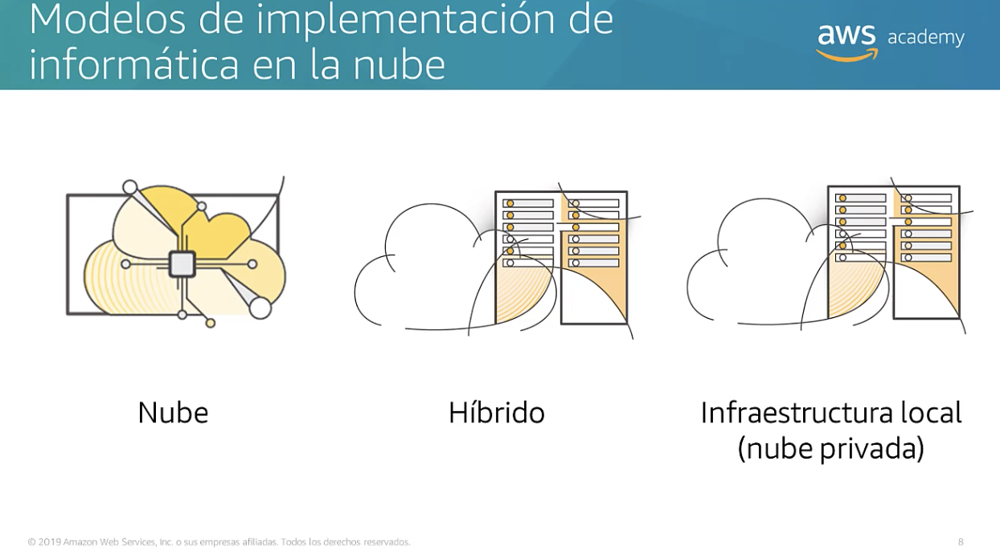
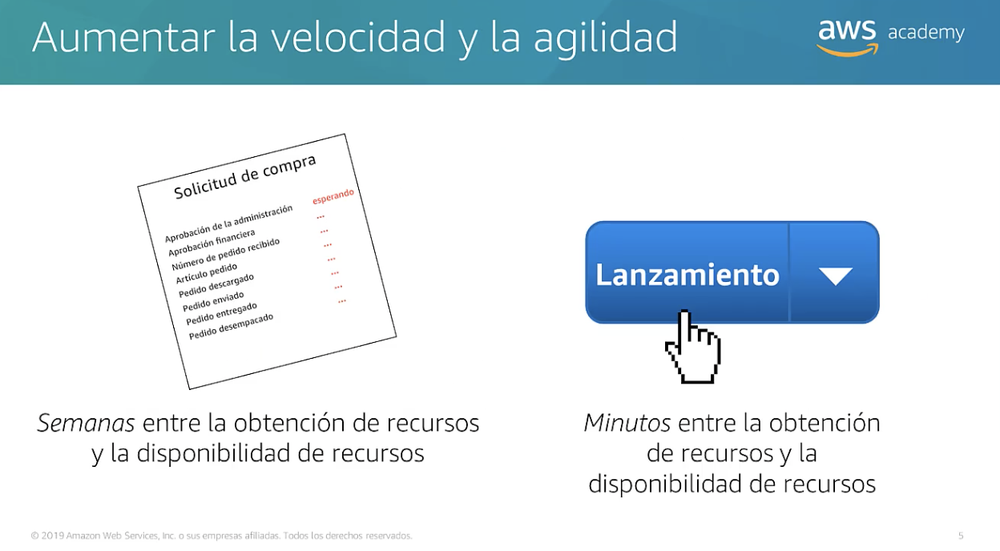
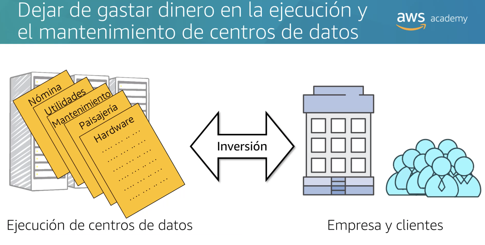
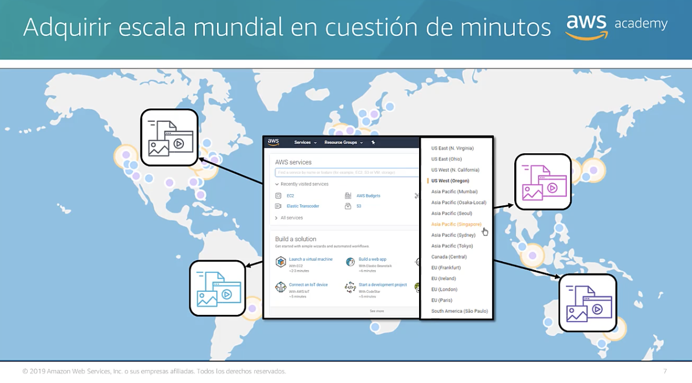

CLASES HASTA EL 12 DE NOVIEMBRE DE 2026Computación Grid y Cloud
Nueve temas · Actualizado el 17 de noviembre de 2026
Imágenes originales y ejemplos de clase. El taller incluye aclaraciones técnicas con sus fuentes.
Archivo principal para nuevos apuntes1. Fundamentos de computación en la nube
Clase: 15/10/2026
Volver al índice
La computación en la nube permite acceder a recursos tecnológicos alojados en infraestructura remota.
Tres conceptos principales:
- aprovisionamiento de recursos/servicios tecnológicos bajo un esquema bajo demanda
- a través de una red (internet)
- bajo un esquema pago por uso
Modelos de Servicio en la Nube:
- IaaS: infraestructura como servicio: permite aprovisionar recursos tecnológicos, por ejemplo, un servidor virtual
- PaaS: Plataforma como servicio, me otorga una plataforma de alguna solución tecnológica, por ejemplo me brinda herramientas como base de datos, API etc etc
- SaaS: Software como servicio, por ejemplo el gmail, outlook, utilizado por usuarios finales

Modelos de Implementación.
- Nube Pública: se despliega y yo puedo acceder a través de internet desde cualquier región geográfica
- Nube Privada: (soberanía de los datos: hay políticas que los datos no salgan del país) se despliega y yo puedo acceder a través de INTRANET pero solo dentro de una región geográfica y de una empresa, un ejemplo AWS outposts
- Nube Híbrida: mezcla de pública y privada dependiendo de los intereses del cliente
- Nube Comunitaria: servidores, almacenamiento, aplicaciones y servicios— que son gestionados de manera conjunta por un grupo de usuarios con intereses alineados.

Ventajas:
CAPEX (Gasto de Capital - Capital Expenditure):
Inversión en la adquisición o mejora de activos de largo plazo para expandir el negocio.
Se registra en el balance general y su costo se deprecia o amortizar gradualmente en varios años.
OPEX (Gasto Operativo - Operational Expenditure):
Costos continuos y recurrentes del día a día necesarios para mantener la operación en marcha.
Se deduce por completo en el estado de resultados dentro del mismo período fiscal en que ocurre.
1. Cambiar gastos de capital por gastos variables

2. Economías de escala

3. Obtener recursos bajo demanda
Obtener recursos bajo demanda

4. Aumentar la velocidad y la agilidad

5. Reducir la operación y el mantenimiento de centros de datos

6. Adquirir escala mundial en minutos

2. Servicios de AWS y Amazon EC2
Clase: 15/10/2026
Volver al índice
Categorías:

Categoría Informática
Un ejemplo
EC2 (Amazon Elastic Compute Cloud): Servicio de computación en la nube que permite crear y administrar servidores virtuales (llamados instancias) bajo demanda con capacidad de cómputo escalable.
Nombre completo: Amazon Elastic Compute Cloud.
Función principal: Permite aprovisionar máquinas virtuales en minutos con la configuración que elijas de CPU, memoria RAM, almacenamiento y sistema operativo (Linux, Windows, etc.).
Elasticidad: Puedes aumentar o reducir la potencia y cantidad de servidores según el tráfico o la demanda de tu aplicación.
Modelo de cobro: Pago por uso (por segundo o por hora), convirtiendo los costos de infraestructura física (CAPEX) en gastos operativos variables (OPEX).
Los AMIs (Amazon Machine Image): son imágenes de máquina virtual preconfiguradas que incluyen el sistema operativo y el software necesario para lanzar instancias en la nube. Sirven como plantillas reutilizables para desplegar servidores idénticos de forma rápida y consistente.
Instancias: Son entornos virtuales o físicos donde se ejecutan las cargas de trabajo, definidos por la conformación de la familia (tipo de hardware) y el tamaño (capacidad de recursos).
La conformación determina cuántos recursos (CPU, memoria) se asignan según la familia y el tamaño elegido.
Familia: Define el tipo de procesador y la cantidad de memoria que tendrá la instancia, agrupando configuraciones según el caso de uso (cómputo, memoria, propósito general).
Cada familia ofrece perfiles específicos de CPU y RAM para optimizar rendimiento y costo.
Pares de claves: Son el mecanismo de autenticación basado en criptografía asimétrica, donde se crean una llave pública y una privada para acceder a las instancias.
La llave pública se instala en la instancia y la privada la guarda el usuario para autenticarse de forma segura sin contraseña.
GP e IO — aclaración: En el apartado de almacenamiento, gp2/gp3 e io1/io2 son tipos de volúmenes EBS, no familias de instancias EC2.
Los volúmenes de propósito general sirven para cargas variadas; los de IOPS aprovisionadas se orientan a cargas que requieren rendimiento de entrada/salida consistente.

3. Redes y seguridad: VPC y Security Groups
Clase: 20/10/2026
Volver al índice
VPC ID: Es el identificador único que AWS asigna a una Virtual Private Cloud, es decir, una red lógica aislada dentro de la nube donde despliegas tus recursos (servidores, bases de datos, etc.). Sirve para referenciar esa red específica en configuraciones, APIs y otros servicios.
Security Groups:
Son firewalls virtuales que controlan el tráfico de entrada y salida (se configuran) de tus instancias (como EC2), permitiendo solo los puertos, protocolos y orígenes que definen. Son stateful: si permites una conexión de entrada, la respuesta sale automáticamente sin regla adicional.
Regla de entrada (Inbound): Define qué tráfico externo puede llegar a tu instancia, indicando protocolo, puerto y origen; por ejemplo, SSH (TCP puerto 22) permite conectarte de forma remota a un servidor Linux, idealmente restringido a tu IP.
Regla de salida (Outbound): Define qué tráfico puede salir de tu instancia hacia otros destinos (internet, otras redes o servicios); por defecto en AWS permite todo el tráfico saliente. La regla de salida que se crea por defecto es la de internet
Ampliación de clase — 2026-11-12
Última actualización: 2026-11-17
Stateful y stateless
| Control |
Comportamiento |
Tráfico de respuesta |
| Security Group |
Stateful: sigue el estado de las conexiones. |
La respuesta de una conexión permitida se autoriza automáticamente. |
| Network ACL |
Stateless: evalúa entrada y salida por separado. |
Deben permitirse ambos sentidos, incluidos los puertos de retorno necesarios. |
Permitir NFS desde otro Security Group
En el grupo del destino de montaje EFS, permite entrada TCP 2049 con el grupo de EC2 como origen. En EC2, permite la salida correspondiente. La referencia al grupo evita enumerar individualmente las IP de las instancias asociadas; también deben cumplirse las rutas y los demás controles de red.
0.0.0.0/0 abarca todas las direcciones IPv4. Una regla así no crea por sí sola acceso desde Internet: también depende de la conectividad. En este taller, restringe SSH a tu IP y NFS al grupo de EC2.
Ver taller completo.
Fuentes: AWS: Security Groups y ACL, AWS: seguridad de red EFS.
4. Automatización inicial con User Data
Clase: 22/10/2026
Volver al índice
User Data: permite pasar un script o configuración a una instancia (en AWS EC2), que se ejecuta solo en el primer arranque.
Configuración:
#!/bin/bash
sudo dnf update -y
sudo dnf install -y httpd
sudo systemctl enable --now httpd
IP=$(hostname -I | awk '{print $1}')
USUARIO=$(whoami)
HOSTNAME=$(hostname)
FECHA=$(date)
sudo tee /var/www/html/index.html > /dev/null << EOF
<!DOCTYPE html>
<html lang="es">
<head>
<meta charset="UTF-8">
<meta name="viewport" content="width=device-width, initial-scale=1">
<title>Mi primer servidor en AWS</title>
<style>
body {
font-family: Arial, sans-serif;
background: #0f172a;
color: #e2e8f0;
display: flex;
flex-direction: column;
align-items: center;
justify-content: center;
height: 100vh;
margin: 0;
}
h1 { color: #38bdf8; }
p { color: #94a3b8; }
</style>
</head>
<body>
<h1>¡Hola Ariel Elizalde desde EC2!</h1>
<h1>IP: $IP</h1>
<h1>Usuario: $USUARIO</h1>
<h1>Hostname: $HOSTNAME</h1>
<h1>Fecha: $FECHA</h1>
<p>Apache está funcionando en mi instancia de AWS.</p>
</body>
</html>
EOF
Las “instrucciones” son comandos automáticos (bash o cloud-config) como instalar paquetes, crear usuarios o levantar servicios, para que la instancia se configure sola.
cloud-init.log (/var/log/cloud-init.log): Registro detallado de los eventos internos de cloud-init, el servicio que ejecuta la configuración inicial de la instancia; sirve para diagnosticar qué etapas se ejecutaron y cuáles fallaron.
cloud-init-output.log (/var/log/cloud-init-output.log): Captura la salida estándar y los errores de los comandos de tu script de User Data; es el primero que se revisa para depurar fallos del script.
5. Consola, AWS CLI y SDK
Clase: 27/10/2026
Volver al índice
Mecanismos de acceso e interacción con AWS (o Herramientas de gestión e interfaces de AWS)
AWS Web (Consola de administración): Interfaz gráfica accesible desde cualquier navegador para configurar y supervisar tus recursos visualmente. Es ideal para tareas exploratorias, monitoreo en tiempo real y administraciones manuales sin tocar la terminal.
AWS CLI por consola: Herramienta que permite interactuar con los servicios de AWS ejecutando comandos directos en la terminal. Permite automatizar despliegues por medio de scripts y ejecutar operaciones repetitivas con rapidez.
- Configuración inicial
- access key
- secret key
- session token
aws ec2 run-instances --image-id ami-XXXXXXXX --instance-type t3.micro --key-name MiKeyPair --count 1
--image-id: Sistema operativo que usará el servidor (ID de la AMI).
--instance-type: Capacidad de hardware (CPU y RAM, ej. t3.micro).
--key-name: Nombre de tu clave SSH registrada en AWS (sin extensión .pem).
--count: Número de servidores que se van a crear.
SDK (Software Development Kit): Conjunto de librerías para lenguajes específicos (Python, Node.js, Java) que integra AWS dentro de tus programas. Facilita que tus aplicaciones se conecten, envíen datos o controlen la infraestructura desde su propio código.
6. Infraestructura como código con Terraform
Clase: 05/11/2026
Volver al índice
Terraform:
Es una herramienta de codigo abierto, IasCodigo permite definir crear, actualizar o eliminar (CRUD) mediante archivos de configuración, el archivo principal de terraform se llama main, su archivos extension .tf, permite automatizar, de manera declarativa intensiones no el paso a paso
7. Almacenamiento: EBS, EFS y NFS
Clase: 10/11/2026
Volver al índice
Categorías de Almacenamiento:
Persistente: Es un almacenamiento que perdura en el tiempo
- Storage EC2:
- Amazon EBS (Elastic Block Store), servicio de almacenamiento persistente por bloques independientes que trabajan en conjunto
- gp3 o gp2 (propósito general; gp3 corresponde a la tercera generación): se usa para cualquier cosa, para ámbitos generales
- io1 e io2 (input-output de primera o segunda generación): tipos de volúmenes de alto rendimiento por ejemplo para instalar recursos como base de datos ejemplo un CRUD, optimizada para la escritura y lectura
- Amazon EFS (Elastic File System), servicio administrado, permite varias instancias almacenen de manera compartida sobre este sistema de almacenamiento de red a través del protocolo NFS.
- NFS (Network File System o Sistema de Archivos de Red) es un protocolo distribuido de nivel de aplicación basado en la arquitectura cliente-servidor, que permite a un equipo acceder, leer y escribir archivos y directorios remotos a través de una red IP como si estuvieran almacenados en su propio disco local.

- Network es un punto de acceso a cada una de las zonas de disponibilidad
No Persistente: (Efímero) es volátil mientras el proceso está en ejecución existe y si se termina también se termina o borra ese almacenamiento
Recuerda tenemos que montar un disco cuando colocamos un nuevo disco en el servidor
Ampliación de clase — 2026-11-12
Última actualización: 2026-11-17
EBS frente a EFS
| Aspecto |
EBS |
EFS |
| Tipo |
Almacenamiento en bloques. |
Sistema de archivos compartido. |
| Uso en el taller |
Volumen de 10 GiB de la instancia 1, montado en /disco2. |
Mismo sistema de archivos montado en /efs1 de las dos instancias. |
| Preparación |
Identificar el volumen; formatear solo si está vacío y sin sistema de archivos. |
Instalar amazon-efs-utils y montar por red con TLS. |
| Acceso |
Volumen dedicado en este ejercicio; Multi-Attach es una opción específica de io1/io2. |
Varios clientes acceden a los mismos archivos mediante NFS. |
NFS y archivos compartidos
NFS permite montar un sistema de archivos remoto como un directorio local. Para EFS, la conectividad NFS utiliza TCP 2049. Leer desde la segunda instancia el archivo escrito en la primera verifica acceso al mismo almacenamiento, no una copia sincronizada entre discos.
Elasticidad y disponibilidad
EFS administra la infraestructura y ajusta el almacenamiento a los archivos guardados. La facturación puede incluir otros componentes además de capacidad. EFS Regional guarda datos en varias zonas de disponibilidad; EFS One Zone usa una sola. No todos los sistemas EFS tienen la misma distribución entre zonas.
Ver taller completo.
Fuentes: AWS: Multi-Attach de EBS, AWS: destinos de montaje EFS.
8. Práctica: conexión SSH y montaje de EBS
Clase: 10/11/2026
Volver al índice
Antes de formatear, identifica el dispositivo correcto con lsblk -f. El comando mkfs elimina datos del volumen seleccionado. Los nombres de dispositivo pueden variar entre instancias.
1. Conexión a la instancia EC2
- Conectar por SSH a Amazon Linux 2023
ssh -i "mi-primera-llaves-ae.pem" ec2-user@ec2-54-87-193-187.compute-1.amazonaws.com
- Para qué sirve: Inicia una sesión remota segura por SSH hacia la instancia utilizando tu archivo de llave privada (
.pem).
2. Inspección de discos disponibles
Listar dispositivos de bloque y tamaños
lsblk
- Para qué sirve: Muestra los discos y particiones conectados al servidor con su tamaño (
20G en xvda y 10G en xvdb), tipo y punto de montaje.
Verificar sistemas de archivos y UUID
lsblk -f
- Para qué sirve: Lista los dispositivos junto con su tipo de sistema de archivos (
FSTYPE), identificador UUID y espacio disponible. Permite comprobar que el disco nuevo (xvdb) está vacío y sin formato.
Consultar metadatos del nuevo disco
sudo blkid /dev/sdb
- Para qué sirve: Consulta el
UUID y formato del disco /dev/sdb. Al estar recién creado, no devuelve información.
3. Formateo y montaje del nuevo volumen
Crear el directorio de montaje
sudo mkdir -p /disco2
- Para qué sirve: Crea la carpeta
/disco2 con permisos de administrador, la cual funcionará como punto de montaje para acceder al disco.
Formatear el volumen con sistema de archivos XFS
sudo mkfs -t xfs /dev/sdb
- Para qué sirve: Formatea el disco
/dev/sdb asignándole el sistema de archivos XFS (sin este paso previo, mount arroja error de superbloque/formato inválido).
Montar el disco en el sistema
sudo mount /dev/sdb /disco2
- Para qué sirve: Vincula el disco ya formateado dentro de
/disco2 para que el sistema operativo pueda leer y escribir en él.
4. Verificación y prueba de escritura
Comprobar espacio disponible y tipo de formato
df -hT
- Para qué sirve: Muestra el espacio libre y usado de todos los discos en formato legible (
GB/MB) junto con su sistema de archivos (xfs), confirmando que /disco2 está activo (reemplaza a df y corrige el error de escritura df -ht).
Crear un archivo de prueba en el volumen
echo "texto de prueba" | sudo tee /disco2/prueba.txt
- Para qué sirve: Crea el archivo
prueba.txt dentro del nuevo disco con permisos de administrador y escribe una línea de texto para validar la escritura.
Leer el archivo creado
cat /disco2/prueba.txt
- Para qué sirve: Muestra en pantalla el contenido de
prueba.txt para confirmar que los datos se guardaron correctamente.
Verificación final de montaje y formato
lsblk -f
- Para qué sirve: Comprueba que
xvdb ya cuenta con formato xfs, un UUID propio asignado y punto de montaje activo en /disco2.
9. Taller de almacenamiento EBS y EFS
Fecha de clase: 2026-11-12
Última actualización: 2026-11-17
Volver al índice
1. Objetivo
Aprovisionar y configurar almacenamiento en bloque dedicado (Amazon EBS) y almacenamiento de archivos en red compartido (Amazon EFS) sobre instancias Amazon Linux 2023, aplicando reglas de seguridad mediante Security Groups y validando el acceso a los mismos archivos desde dos servidores EC2.
2. Conceptos Clave
- Amazon EBS (Elastic Block Store): Almacenamiento en bloques. En este taller se utiliza un volumen dedicado a la primera instancia. Solo se formatea si es nuevo y no contiene un sistema de archivos; existen configuraciones Multi-Attach para determinados volúmenes io1/io2.
- Amazon EFS (Elastic File System): Sistema de archivos en red administrado basado en el protocolo NFSv4 (puerto TCP 2049). Permite que múltiples instancias EC2 lean y escriban los mismos archivos al mismo tiempo y crece automáticamente.
- Security Group (Stateful): Firewall virtual con memoria (si permite entrar tráfico, deja salir la respuesta). Por seguridad, el EFS no se abre al mundo (
0.0.0.0/0), sino únicamente al Security Group de las instancias EC2.
3. Fase 1: Configuración en la Consola Web de AWS
A. Configurar los Security Groups (VPC / EC2)
- Security Group para las instancias EC2 (
sg-ec2):
- Regla de entrada: Puerto
22 (SSH) desde tu IP pública actual (/32) para conectarte por terminal.
- Security Group para el EFS (
sge-efs-ae):
- Regla de entrada: Tipo
NFS (Puerto TCP 2049) poniendo como Origen el ID del Security Group de tus EC2 (sg-ec2).
B. Lanzar las dos instancias EC2 (Amazon Linux 2023)
- Instancia 1 (Principal):
- Seleccionar Amazon Linux 2023, tipo
t3.micro y tu par de claves (.pem).
- En Configuración de red, elegir la VPC por defecto y asignar
sg-ec2.
- En Configurar almacenamiento, mantener el disco raíz (
8 GiB) y hacer clic en Agregar nuevo volumen para añadir un disco EBS de 10 GiB.
- Instancia 2 (Secundaria):
- Lanzar una segunda instancia Amazon Linux 2023 en la misma VPC, con el mismo Security Group (
sg-ec2) y la misma llave .pem.
C. Crear el Sistema de Archivos EFS
- Ir al servicio Amazon EFS en la consola de AWS y hacer clic en Crear sistema de archivos.
- Asignar un nombre, seleccionar la misma VPC de las instancias EC2 y hacer clic en Personalizar.
- En el paso de Acceso a la red, reemplazar el Security Group por defecto de cada Zona de Disponibilidad por el grupo
sge-efs-ae (puerto 2049 abierto).
- Finalizar la creación y copiar el ID del sistema de archivos (ejemplo:
fs-02d737f8f33137fd6).
Requisitos de red: verifica que existan destinos de montaje EFS disponibles en las zonas usadas por las instancias, que DNS funcione y que las reglas de salida de EC2 permitan TCP 2049 hacia EFS.
4. Fase 2: Formatear y Montar el Disco EBS (10 GB) en Instancia 1
Conéctate por SSH a la Instancia 1 y ejecuta los siguientes comandos:
Identificar el nombre del disco nuevo de 10 GB:
lsblk
lsblk -f
Nota: En instancias t3, los volúmenes se presentan como dispositivos NVMe. /dev/nvme1n1 es solo el nombre del ejemplo: confirma el dispositivo y su tamaño con lsblk y el sistema de archivos con lsblk -f antes de continuar.
Crear la carpeta que servirá como punto de montaje:
sudo mkdir -p /disco2
Formatear únicamente el volumen nuevo y vacío con XFS:
mkfs puede destruir los datos existentes. No lo ejecutes sobre el disco raíz ni sobre un volumen que ya contenga datos. Sustituye el dispositivo del ejemplo por el que hayas identificado.
sudo mkfs -t xfs /dev/nvme1n1
Importante: Un volumen nuevo sin sistema de archivos necesita formateo para este uso. Uno restaurado desde una instantánea puede estar ya formateado: no lo vuelvas a formatear.
Montar el disco en la carpeta /disco2:
sudo mount /dev/nvme1n1 /disco2
Comprobar el montaje y realizar prueba de escritura:
df -hT
echo "texto de prueba" | sudo tee /disco2/prueba.txt
cat /disco2/prueba.txt
5. Fase 3: Instalar y Montar Amazon EFS en Instancia 1
En la misma terminal SSH de la Instancia 1:
Instalar la librería oficial de utilidades EFS y crear la carpeta /efs1:
sudo dnf install -y amazon-efs-utils
sudo mkdir -p /efs1
Montar el EFS usando su ID (cifrado con TLS):
El ID mostrado es el ejemplo de clase. Sustitúyelo en ambas instancias por el ID de tu sistema de archivos.
sudo mount -t efs -o tls fs-02d737f8f33137fd6:/ /efs1
Verificar el montaje y crear un archivo compartido:
df -hT /efs1
echo "Hola desde EC2 en Amazon EFS" | sudo tee /efs1/prueba.txt
cat /efs1/prueba.txt
6. Fase 4: Conectar la Instancia 2 y Comprobar el Acceso Compartido
Abre una segunda ventana de terminal, conéctate por SSH a la Instancia 2 y enlázala al mismo EFS:
Instalar utilidades EFS, crear /efs1 y montar el mismo EFS:
sudo dnf install -y amazon-efs-utils
sudo mkdir -p /efs1
sudo mount -t efs -o tls fs-02d737f8f33137fd6:/ /efs1
Listar y leer el archivo creado desde la Instancia 1:
ls -la /efs1
cat /efs1/prueba.txt
Escribir desde la Instancia 2 para validar lectura y escritura compartidas:
echo "Hola desde la segunda instancia" | sudo tee -a /efs1/prueba.txt
cat /efs1/prueba.txt
Al ejecutar cat /efs1/prueba.txt nuevamente en la Instancia 1, deben verse ambas líneas tras completar la escritura. Se accede al mismo sistema de archivos; no se sincronizan dos discos locales.
7. Resumen de Comandos Útiles de Verificación
| Comando |
Función |
lsblk -f |
Lista discos conectados, formato (xfs), UUID y puntos de montaje. |
df -hT |
Muestra el espacio usado/disponible en GB/MB y el tipo de sistema (xfs, nfs4). |
ls -la /efs1 |
Lista todos los archivos (incluidos ocultos) y permisos dentro del EFS. |
cat /efs1/prueba.txt |
Muestra en pantalla el contenido del archivo de texto. |
8. Alcance del taller
Los comandos realizan montajes manuales. Para volver a montar automáticamente después de un reinicio se requiere una configuración adicional, como /etc/fstab. Un montaje manual no implica que los datos almacenados se borren al reiniciar.
9. Conceptos relacionados
Fuentes de las aclaraciones